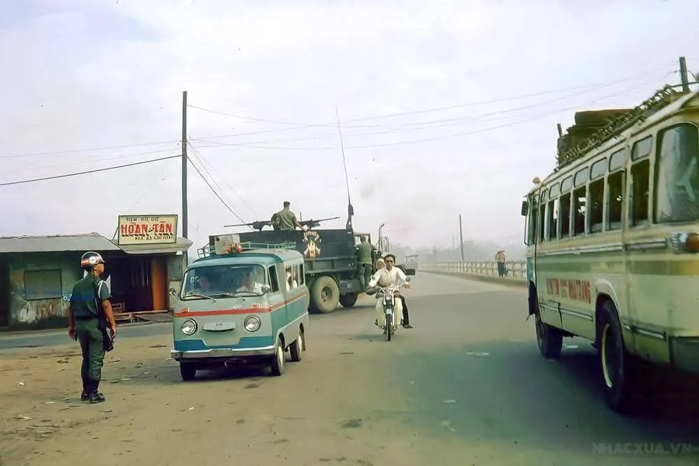

Xe đò: 베트남 옛 시외버스 이야기
중부 베트남의 많은 사람들에게 시외버스 'xe đò'를 타는 것은 단순한 이동이 아니라 삶과 어린 시절의 일부였습니다. 누군가는 버스표 가격을, 누군가는 국도를 따라 끝없이 펼쳐진 초록 논을 기억합니다. xe đò가 무엇이며 이름은 어디서 왔는지, 그리고 옛 나트랑이 기억하는 버스터미널을 소개합니다.
xe đò란 무엇인가
'Xe đò'는 중부와 남부 베트남에서 시외버스를 부르는 말입니다. '탈것'을 뜻하는 xe와 '나룻배·나루'를 뜻하는 đò가 합쳐진 단어입니다. 어른들에게 이 말은 끝없는 출장, 더위, 연료 냄새, 꽉 찬 버스를 떠올리게 하고, 아이들에게는 매번의 여행이 진짜 모험이었습니다.
이름의 유래
메콩 델타의 기록자로 유명한 베트남 작가 선 남(Sơn Nam)에 따르면, 예전 남부의 주요 교통수단은 배였습니다. 1930년대 프랑스가 첫 버스 노선을 열었지만, 승객들은 버스에서 내린 뒤에도 목적지에 닿으려면 나룻배나 배로 갈아타야 했습니다.
그렇게 'xe đò'라는 이름이 생겼습니다 — 말 그대로 '나루까지 가는 버스'입니다. 다리가 나룻배를 대신한 뒤에도 이 이름은 그대로 남았습니다.
xe khách, xe ca 그리고 xe đò
지역마다 버스를 부르는 이름이 다릅니다. 베트남 북부에서는 'xe khách' 또는 'xe ca'라 하고, 중부는 남부와 마찬가지로 'xe đò'라는 이름이 남았습니다. 한 가지 설에 따르면, 중부 노선의 버스 회사 대부분을 사이공 출신 사업가들이 세웠기 때문이라고 합니다.
옛 xe đò의 모습
옛 버스는 지붕만 봐도 알 수 있었습니다. 안에 들어가지 못한 자루, 바구니, 자전거 등을 지붕까지 가득 실었죠. 빨강·노랑·파랑의 화려한 차체는 햇볕에 바랬고, 실내는 사람과 아이들, 짐으로 가득했습니다. 단순한 교통수단이 아니라 바퀴 달린 작은 세상이었습니다.
모험 같던 버스 여행
어른들에게 xe đò는 후텁지근한 공기, 휘발유 냄새, 시끌벅적한 옛 버스터미널을 떠올리게 합니다. 아이들에게는 매 여행이 하나의 사건이었습니다 — 창가의 음식 장수들, 국도 위의 정차, 유리창 너머 끝없는 논. 많은 베트남 사람들이 이 여행을 따뜻하게 기억합니다.
국도 1호선(Quốc lộ 1)을 따라
xe đò의 주요 노선은 베트남을 남북으로 가로지르는 국도 1호선(Quốc lộ 1)을 따라 이어졌습니다. 창밖으로 초록 논, 마을, 시장, 다리가 스쳐 지나갔습니다. 이 길은 고속버스와 기차가 생기기 훨씬 전부터 도시와 사람들을 이어 주었습니다.

옛 나트랑의 두 버스터미널
나트랑의 나이 든 세대는 도시의 두 주요 버스터미널을 잘 기억합니다 — 응우옌호앙(Nguyễn Hoàng) 거리의 벤 쎄 사이공(Bến xe Sài Gòn)과 국도 1호선과 신쭝(Sinh Trung) 거리가 만나는 벤 쎄 닌호아(Bến xe Ninh Hòa)입니다. 여기서 수천 번의 여행이 시작되었습니다.

버스를 운행한 사람들
중부 노선을 운행한 버스 회사 상당수는 사이공 출신 사업가들이 세웠습니다 — 그래서 남부의 이름 'xe đò'가 중부에도 자리 잡았습니다. 운전사와 차장은 단골 승객의 얼굴을 알았고, 터미널은 만남과 이별, 작은 장사의 장소였습니다.
오늘날의 xe đò
오늘날 옛 목조 버스는 편안한 침대버스와 에어컨이 있는 '리무진' 승합차로 바뀌었습니다. 하지만 'xe đò'라는 이름은 남아, 여전히 시외버스를 그렇게 부릅니다. 옛 버스의 복고 사진은 베트남 사람들에게 지난 시절에 대한 향수를 불러일으킵니다.
나트랑 방문객에게 흥미로운 이유
나트랑에서 휴가를 보낸다면, xe đò 이야기는 도시를 현지인의 눈으로 보는 방법입니다 — 옛 터미널이 있던 그 거리들, 버스 창밖의 같은 국도 1호선. 그리고 옛 버스 사진은 베트남 친구에게 그들의 어린 시절을 물어볼 좋은 구실이 됩니다.
그리고 베트남 친구나 소중한 사람에게 따뜻한 마음을 전하고 싶다면, 나트랑과 깜라인 전역의 호텔·빌라·사무실로 신선한 꽃다발이나 헬륨 풍선을 당일에 배달해 드립니다. WhatsApp, Telegram 또는 KakaoTalk으로 연락 주세요. 커뮤니티 'Người Nha Trang xưa & nay' 자료 참고.